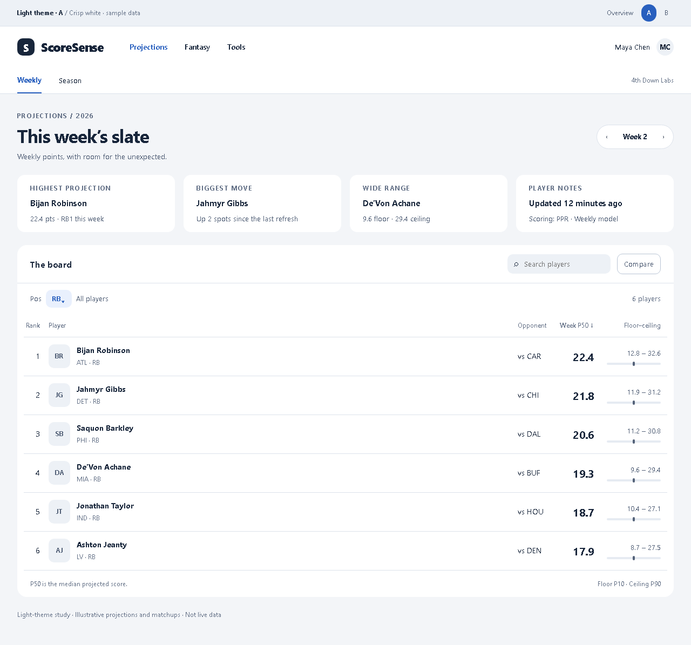
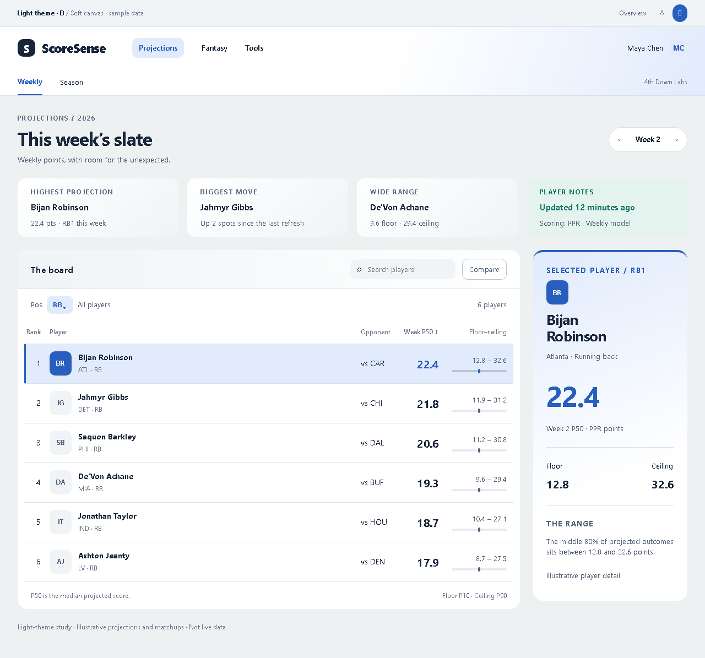

ScoreSense · Design study
A lighter view of the board.
Two light-theme directions, using the weekly Projections board.

A · Crisp white
A full-width board, white surfaces, cool gray canvas, and navy type.
Explore A →
B · Soft canvas
A softer neutral canvas with a selected-player detail rail beside the board.
Explore B →Static concepts with searchable sample data. Production theme is unchanged.